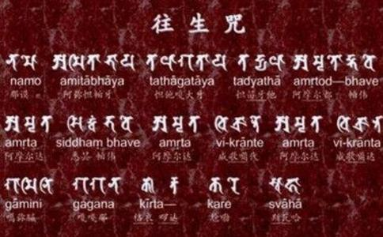

提到‘
‘往生咒’以“甘露”（梵语“阿弥利哆”）喻
今不揣谫薄，试为注释，冀正视听，而证僧
（上栏原文附注，下栏试释）
1、南无阿弥多婆夜（夜是呼唤语，相当于啊）！ 归命无量光
2、哆他伽哆夜 如来
3、哆地夜哆 即说咒曰
4、阿弥利都（甘露）、婆毗（源头） 甘露主
5、阿弥利哆
6、悉耽（成就）、婆毗 甘露成就者
7、阿弥利哆
8、毗迦兰谛（普及者） 甘露播洒者
9、阿弥利哆
10、毗迦兰多
11、伽弥腻（周遍者） 甘露逼洒者
12、伽伽那（
13、枳多（名闻）、遍虚空宣扬
迦隶（造作者） （甘露）者
14、裟婆诃 成就圆满
再以‘阿弥陀佛说咒’作比较
那谟菩陀夜 归命佛
那谟罗摩夜 归命法
那谟
那谟阿弭多婆夜 归命无量光
哆他伽多夜 如来
阿罗诃羝（
三藐三菩陀夜 正遍知
哆侄他 郎说
阿弭脷羝 甘露
阿弭脷都、婆鼙 甘露主
阿弭脷多、三（遍）、婆鼙 甘露具足者
阿弭脷多、鼻迦谰羝、伽弭俩 甘露遍洒者
伽伽那、稽脷底、迦嚟 遍虚空宣扬者
婆罗皤（应作娑罗皤、一切）、波哆
（郎波哆伽，罪障）、义焰迦嚟（除灭者） 除灭一切恶业者
娑婆诃 成就圆满
‘甘露陀罗尼咒’一百二十六字，二十二句，与‘阿弥陀佛说咒’含义相似，惟“甘露”则具十称；真言末句，“萨婆（一切）、枳隶舍（烦恼）、羯义炎迦隶（除灭者）”（除灭一切烦恼者），意思也一样，相当于四宏誓愿的“烦恼无尽誓愿断。”通行本似依这句
曾有同学问我：佛教一般念咒不解义，有何咒力？我说：你们好看球赛，且以球赛为喻。枝际比赛时，啦啦队员出场为己方球队鼓气，齐声高喊：“啦啦啦！啦啦啦！”健儿们应声便集中心力直冲对方门线，根本不容解释和思虑。若不相应，好整以暇，去对方门线何只“十万亿佛上。”
往生净上大旨，在于启迪人之善心。净土非相，郎我心是。“欲得净i，当净其心，随其心净，则佛土净”‘维摩经·佛国品第一’）。若不求诸心，则愈求愈远，（“
关于与佛法结不解缘的甘露故事和持咒的作用，我曾在：日颈观音舆大悲心陀罗尼’和“
“苦恼忧悲满世间”（‘佛州小草’），人生何能幸免！佛教强调人本与人道主义，要求人们“对一切众生伸出慈爱之手，解苦恼者之忧，施贫困者所需，与患病者以药”（道端良秀‘
“因于象生而起大悲，因于大悲，生菩提心，因菩提心，成等正觉”（‘
一九八六年立秋于纽约大学近东系
普愿父母怨亲有情无情同沾甘露
作者时记一九八六年七月来美出席第二次中美大学校长会议的中国大学校长代表团，在纽约期间由纽约大学方面负责接待，纽大校长亲自隆重主持。宴会中我同南京大学客人谈到佛学，获悉该校己得到教委会批准，继北京大学之后，在原有的宗教研究所外增设包括佛教的宗教专业，开始招生，培养研究、教学和管理人才。
佛教研究百年来风行泰西学术界，自帚俄时代的列宁格勃以至巴黎、伦教，辗转以及日本和美国，开花结实。中国反瞋乎其后，几成绝响。范文澜教授说过：“在中国历史上，佛教和文化关系如此之深，不懂佛学就不懂中国文化。”佛学得到重视与了解，破除“大胆假设”的主观形态，向世界看齐，是复兴中国文化、
郑僧一于纽大